|
| Challenges |
Vous trouverez pour chacun d'eux une Aide sympathique avec les Armes à Utiliser, les Recoins ou se cacher, et les Pieges à éviter ! Vous n'etes pas forcés de finir ces Challenges, mais ils débloquent des Options utiles si vous voulez pleinemment profiter du Multiplayer et créer vos propres Scenarios par exemple ! Quand vous aurez fini au moins 23 Challenges, vous pourez créer votre Battle en parametrant tout ce que vous voulez (Armes, Arenes, etc) Attention, quand vous rajoutez un Joueur Humain, çà rajoute un Simulant dans 90% des cas. |
Bon alors voilà le tout premier Challenge ! Si vous n'arrivez pas à le passer, je ne peux rien pour vous ! Le(s) Simulants sont les plus faciles, et les Armes suffisamment puissantes pour se faire plaisir avec ce Pigeon de ShockSim. Pour les initiés (qui connaissent très bien Goldeneye), le Sniper Rifle sera un vrai Plaisir, et permettra de se remettre facilement dans le Bain. Vous constaterez que cette fois le Sniper Rifle vise plus loin que dans Goldeneye… Pour les Gens pressés, le Dragon fera l'affaire, tout comme quelques pruneaux de Magnum en pleine tête. En fait, ce Challenge peut devenir un Concours : qui arrivera à tuer le plus de fois le(s) Simulants ? |
Ce Niveau permet de s'initier à quelques nouveaux plaisirs. Le Couteau de Combat d'abord, qui possède une Deuxième Fonction que l'on qualifiera de très sournoise, avec en prime les toussotements du malheureux poignardé ! ! Puis vient le Cyclone. Il rappelle le RCP-90 de Goldeneye, mais là on peut en avoir deux ! Son débit est rapide (et le son nickel est Magique) et la Deuxième Fonction peut être très pratique en cas d'envie soudaine de défoulement brutal. Attention toutefois car si vous visez mal, c'est tout le chargeur qui part dans la Nature… Le Dragon est comme un poisson dans l 'eau dans ce Niveau. En effet, chaque Salle est reliée aux autres par de minces conduits. Déposez gentiment un Petit Dragon, attendez, observez, souriez. Enfin, le Lance Roquettes permet de s'initier aux joies de la Roquette à Tête Chercheuse. C'est une fonction pratique dans les grands espaces (La Prairie, La Grande Salle aux Tourelles…). Malheureusement (si c'est vous qui tirez) ou heureusement (si c'est vous qui étes visé) la Roquette est plus lente quand elle est à Tête Chercheuse. |
Comme pour les Précédents Challenges, il s'agit de tuer les Simulants (remarque pertinente n'est-il pas ?) C'est classique comme tout et peut-être un peu répétitif mais ne vous plaignez pas ! ! Vous verrez quand vont arriver les Challenge 15 ou 18 vous ferrez moins les malins ! ! ! Oui donc, ce Challenge est aussi très simple. Il faut simplement choper quelques mines et les COLLER sur les Simulants. Vous ne le saviez peut-être pas mais on le peut, et vu que ces Simulants ont la fâcheuse habitude de rester sur place et tirer, c'est bon pour vous. De toute façon ils ne visent pas terrible à ce niveau de Challenge. Une autre Technique qui rapporte est celle-ci : ils vont souvent près de l'Ascenseur (peut-être pour tenter de prendre le Dragon…) et un Truc bien fourbe à faire est de délicatement pondre un Dragon a cet emplacement (après avoir prévenu vos potes bien sur, quoique…çà peu être marrant après tout) Comme d'habitude évitez le Gros Trou sous les Tuyaux sans çà c'est toute l'équipe qui morfle, et là les pichenettes sur le crane vont pleuvoir ! |
Voilà donc le Mode Roi De La Zone qui avait l'air si marrant dans les Previews. Le Truc est simple. Il suffit de rester dans la Zone 20 secondes pour marquer 1 Point. Un Petit Chrono va se mettre en marche dès votre entrée dans la Zone. Lorsque la Zone est vide, elle est Verte. Si vous ou un de votre équipe rentre dedans , elle devient Rouge, suivant la couleur de l'Equipe en fait. Là ou les choses se corsent c'est que si un Simulant (ou un Opposant) entre à l'intérieur, le Chrono se bloque là ou il en était et ne repartira que quand vous aurez NETTOYE la Zone. En plus, le Nombre de Points marqués dépend du nombre de Personnages présents dans la Zone. Trois Rouges = 3 Points. Logique. Pour passer ce Challenge il va falloir se mettre d'accord, parce que le Niveau est grand et que beaucoup s'y perdent. Alors soit un Type tombe dessus par hasard et la garde tout seul, soit vous vous donnez tous rendez-vous dedans et vous marquez en gros. Les Armes vous aideront grandement, notamment le K7 Avenger et le Dragon, sur lesquels les Simulants s'empaleront joyeusement. A noter l'apparition de ce foutu Shield que les Simulants n'arrêtent pas de squatter. Une raison de plus pour les plomber, la Bave aux Lèvres. |
Revoilà notre ami le Complexe ! ! Le Niveau le plus Technique de Goldeneye fait un retour fracassant avec un Challenge Génial. Même si vous ne connaissez pas bien ce Niveau, il y a le …Farsight XR-20 ! Et oui ! Plus besoin de bouger ! Il suffit de se planquer comme une Taupe dans un coin et de viser en se servant du Radar. Cette Technique marche très bien, vu la faiblesse des Simulants à s'en servir. On peut facilement s'en faire un maximum en un rien de temps… Pour les Amoureux de la Marche à pied, il reste quelques très bonnes armes, j'ai nommé le Cyclone et l'AR 34, dont la Deuxième Fonction est assez puissante. Les Pyromanes en herbe sèmeront des Grenades (en première ou en deuxième fonction, quoique la deuxième soit plus marrante au niveau du son) au gré de leur humeur. Un très bon Challenge, vraiment amusant à 3 ou 4. |
Ce Challenge inaugure le Scénario « Valise Verte ». Ca consiste à garder cette Valise par un de vos Coéquipiers ou par vous le Plus de Temps possible. Toutes les 20 Secondes, vous marquez un Point. Au vu des Armes et du Niveau, il n'y a pas de Problème majeur. A la limite, si un Simulant chope un K7 Avenger, il peut devenir agaçant, mais un Shotgun ou un Magnum en viendra vite à bout, vu que le Simulant vise comme un Pied dans ce Challenge. Le Niveau offre pleins de Possibilités. Vous pouvez jouer de plusieurs manières, comme celles-ci. Vous pouver donner rendez-vous à tous vos potes dans La Petite Maison Dans La Prairie, et vous attendez bien sagement que les Simulants viennent s'empaler sur du Plomb. Vous pouver aussi jouer à Léon avec sa Mallette Noire et décidez d'éliminer tous les Gens qui passent à votre portée, même les Potes sans Armes ! Comme le Nombre de Gens tués ne compte pas, vous pouvez vous faire un Safari en toute tranquillité. |
Ce Challenge est Sympa, puisque il propose le Mode King Of The Hill en License To Kill (Pan ! T'es Mort) et avec des Grenades ! Attention aux Simulants qui on tendance à les utiliser n'importe comment... Fallait oser… En plus de çà, vous étes dans La Warehouse, un Niveau bien travaillé, offrant des Zones bien différentes. Toutes les Armes suffiront à nettoyer les Simulants, puisqu'on est en License To Kill. En fait il faut juste faire gaffe à ce que ces Saletés ne jettent pas des Grenades, sinon… |
Sinon au Niveau des Armes, faites attention aux Simulants armés d'un Super-Dragon, car ils ont fortement tendance à confondre Meurtre et Suicide Collectif. Si vous etes dans le Souterrain par exemple, laissez le Simulant se suicider tout seul (ils paniquent assez vite en général) et récupérez son Super-Dragon… |
Un Challenge bien tripant, puisque la Simulant a enfin de bonnes Armes pour se défendre. Mais vous aussi… Donc bonne tape à l'horizon ! ! Le Niveau est bien grand, et le Farsight tombe à point si vos pieds sont fatigués. Les plus Fourbes placeront un LapTop à un bon endroit … En fait, le Falcon 2 est génial, puisqu'il a une très bonne cadence de Tir. Les Mines sont trop lentes pour ce genre de Travail, mais on peut toujours en pondre… Le Magnum est réservé aux acharnés du Travail bien fait, et aux bon tireurs (et viseurs). Attention aux Trous ! ! ! |
Challenge facile, au vu des Armes qui permettent une vraie boucherie. D'abord on trouve la Carte à Puce, ensuite on va ensemble au PC. On pose des Mines près des issues. On vise loin avec la Deuxieme fonction du AR 34. Les Simulants arrivent. Faites peter. Finissez avec une bonne giclée (d'AR 34) puis admirez. C'est fini ! |
Très bon Challenge, bien corsé au vu des Armes ! ! Pour ceux qui pensent que le Tranquilliseur est une Arme Faible, c'est l'occasion de changer d'avis ! Cette Arme est un Petit Bijou ! Le mieux est d'avoir dans l'Equipe un qui Tanquillise, et un autre qui nettoie (avec le K7 Avenger je suggère…) Si vous avez un Accès de Courage, vous pouvez toujours essayer de tuer un Simulant avec une Dose Mortelle (Deuxième Fonction). Ce coup est dur à placer je le reconnais, mais quand il sortira, vous allez pleurer de Joie tellement c'est beau. Imaginez un peu. Un Gros BlondeSim qui arrive avec son gros K7 Avenger. Le Tranquiliseur bien en main, vous vous ruez sur la bète infâme et hop ! Un coup de Vaccin ! ! Et qu'est-ce qui reste ? Vous, le sourire aux lèvres. Fièrement, vous rechargez (Pschii Pop ! J'adore ce bruit…) et attendez qu'un autre Simulant pointe le bout de son beau K7 Avenger. Le Shotgun est aussi bien efficace, surtout en Deuxième Fonction. Mais visez bien, sinon c'est 2 Balles dans la Nature (ou dans un Copain…) ! Un autre Truc avec le Tranquilliseur. Picorez à mort un Simulant mais ne le tuez pas. Le Malheureux BlondeSim va se mettre à courir dans tous les sens et à tirer à l'Aveuglette. Fort. Si jamais il vous touche par erreur, 2 Balles de Shotgun. Si jamais il ne vous touche pas, 2 Balles quand même. |
Euh… Je sais… Ce Challenge est lourd. Tout d'abord, si vous avez le malheur de crever d'une façon un peu biscornue (tomber d'un étage, en train de viser le ciel…) vous aller mettre 3 heures 52 à réapparaître. Il n'y a pas de Technique particulière si ce n'est qu'il faut ABSOLUMENT se déplacer en pas chassés pour gagner du temps. Et choper un Super-Dragon, ça va de soi. Ou un Sniper Rifle aussi, si le Simulant au loin a un Super-Dragon. Evitez le Shotgun, vu le temps qu'il met à recharger ! Le Falcon 2 (Scope) peut etre efficace si les Balles arrivent toutes dans la Tete. Pour la Petite histoire, il reste encore 1 Challenge en Ralenti. C'est chiant mais va falloir s'y mettre. |
Challenge bien vicieux comme je les aime ! Deja, le G5 Building en License To Kill, c'est AMUSANT ! Et si en plus y a un LapTop, alors là je dis oui ! Surtout que JAMAIS les Simulants ne l'utilisent en Deuxième Fonction (Sentinelle) ! Le Reaper peut être utile, mais gaffe aux Amis parce que cette Arme met 30 ans à arrêter de tirer, le Temps que le Moulinex s'arrete. Le LapTop Gun se trouve dans la Salle aux 2 Piliers, au niveau le plus bas. Il suffit de le Jeter dans la Grande Salle aux 4 Ponts et d'admirer. Ou alors jetez-le et partez en Mission avec un Silencieux ou un Tranquiliseur. Les Grenades… Ben euh… Faites ce que vous voulez mais le niveau est petit... |
Si par malheur le Camp Jaune est la Grande Salle de l'Obélisque, préparez-vous a quelque chose de stressant, parce qu'ils savent assez bien manier le Farsight XR-20. Idem pour la Salle en Escalier, il y a un Super-Dragon dedans et si les Jaunes sont là ils n'hésiteront pas à se suicider pour la bonne cause, les Saletés. En plus il y a un Occulteur dans la Salle du Farsight XR-20, dans les douves sous le Ponton. Les Simulants aiment bien c'est connu. Utilisez le Super-Dragon à tort et à travers, vu qu'ils restent sur place à vous viser plutôt que de s'enfuir. Un Simulant Occulté avec un Farsight XR-20 sera lourd pendant un bon moment avant de se faire descendre. Vu que le nombre de Morts ne compte pas, restez calme et recommencez, encore et encore… Tout ce qui compte, c'est la Valise, et rien que la Valise. Vu que l'emplacement des Camps est aléatoire, vous pourrez toujours recommencer et attendre de tomber sur un bon Camp. Pour vous le Meilleur Camp est certainement la Salle en Escalier, vu l'étroitesse des couloirs, propice au Super-Dragon. Ou alors la Prairie aux Obélisques. |
Attention Attention ! Challenge Explosif ! Dans tous les sens du terme ! Il semblerait que cette fois les ptits gars de chez Rareware aient fumé tout leur Stock de Moquette. Tout seul, ce Challenge peut sembler simple, et amusant. Pourtant, des qu'on est plusieurs, les choses ne se passent plus trop comme on le pensait... Première chose à faire - Le Devastator ! Essayer d'en trouver un le plus vite possible ! Il y en a un dans Le Labo (à l'étage, après l'Escalier Rose) ou un en Bas dans la Grande Salle au Sol vitré, près d'un Pilier. Chopez la Mallette et planquez-vous comme le plus ignoble des Rats dans Le Labo. C'est encore l'endroit le plus simple à défendre à plusieurs, si tout le monde fait bien son Job. Celui qui a la Mallette peut se planquer dans un coin tandis que les autres mettent le Feu aux 2 issues en cas d'attaque de Simulant. Deuxième chose à faire - En cas de Vol de la Mallette par les Simulants, si vous n'arrivez pas à les avoir, essayez ceci : Pour une raison inconnue, les Simulants sont amoureux de l'Ascenseur. Laissez traîner un Dragon dedans ou tout simplement devant cet ascenseur, et attendez tranquillement. En principe, ils arrivent par Grappes de 2 ou 3 et se font avoir à tous les Coups. |

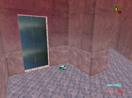
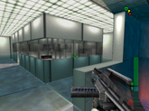
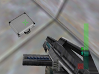
Alors là on est en plein dans les « Challenges à Haut Risques » ! Non seulement y a plus de Radar (ce qui rend le Challenge bien flippant tout seul dans le Noir à 4 Heures du Matin…) mais en plus vous allez vous taper vos tout premiers Perfect Sims ! Tout d'abord, pas de panique. Les Armes de ce Challenge sont relativement géniales et permettent de bien se défendre. Enfin évitez quand même le Falcon 2... La Solution la plus simple - mais la plus chiante - est de s'enfermer dans les Toilettes avec des Mines placées sur la Porte d'entrée, les 2 Conduits d'Aération, et le Mur à droite de la Porte d'entrée (quand vous etes dans les Toilettes). Comme çà, si un Simulant grimpe à l'escalier, il sera raclé une Première fois par la Mine du Mur, puis une Deuxième fois avec celle sur la Porte d'entrée. Vous pouvez aussi vous enfermez dans l'autre Salle contenant des Mines, celle avec les Gros Tuyaux explosés, qui étaient autrefois debout dans Goldeneye. |
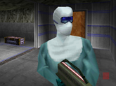

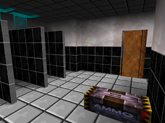
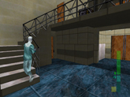
Une autre Solution consiste à trouver un Super-Dragon (soit dans la
Salle avec de la Moisissure au Plafond, soit dans la Petite Salle
juste à Droite quand vous descendez l'escalier des Toilettes) puis
d'aller se mettre tout au fond de la Grande Salle Vide. Cette Salle
se situe tout au fond à droite quand vous avez descendu l'escalier.
Placez-vous de manière à viser l'encablure de la Porte (celle qui
vous fais face) et visez au loin. |
Ce Challenge vous initie aux Joies du Slayer. Cette Arme est une merveille de sournoiserie. Vous pouvez l'utiliser comme un simple Lance-Roquettes ou Guider le Missile avec une vue subjective du plus bel effet (Couleur Jaunie, vue en Fish-Eye, sifflement génial…). En gros pas trop de difficulté si ce n'est que les Simulants adorent la Fonction Guidée du Slayer. Si vous apercevez un Petit Nuage gris se rapprochant, tirez-vous en vitesse ou courrez en marche arrière en longeant les murs. Avec un peu de Chance, le Missile se prendra le Mur. Attention aux Missions Suicides des Simulants, qui comme d'habitude se font une joie de s'exploser avec vous du moment qu'il y a de la Viande. Si les Simulants sont loin, sortez l'AR 34 et hachez-moi tout çà en vitesse. Le Reaper peut etre sympa dans ce Challenge vu qu'il est une des meilleurs Armes (bon Débit, tir dans le tas). Que dire de plus sinon que ce Challenge est assez marrant : Tavail d'équipe, bonnes Armes, quelques Explosions mais juste assez pour que le Jeu rame pas trop, la Zone dans l'escalier est amusante à garder… Bon Challenge, donc ! |
Pour commencer, ce Challenge est un des plus durs... Du moins, au Début, quand on a le Jeu depuis 3 Jours. Les Maians visent vraiment bien, se déplacent vite et sont durs à toucher, vu leur taille. Il faut bien mémoriser ou se trouvent les Armes ainsi que les Zones. Il n'y a que 4 Zones, dont une placée assez loin des autres. Il faut absolument se servir de toutes les Armes. Même si vous n'avez qu'un Tranquilliseur, tout est faisable. Où sont les Armes ? Le LapTop Gun est dans la Grande Salle avec le Pilier isolé au Centre. Il y en a 1 sur le Pilier, et 1 autre au milieu de la Passerelle surplombant cette Salle. Le Phoenix est dans le long escalier montant 2 étages, ainsi que dans la Salle ajourée d'ou l'on voit les toits en Tuiles. Ils sont espacés et pour en avoir 2 il va falloir tuer les Simulants, ou courir vite. Cette Arme devra etre utilisée en Double, et en Deuxième fonction. Le Tranquiliseur est sur le Pont en Bois Jaune et dans la Cave. Le Falcon 2 est partout ailleurs, et personnellement je ne le vous conseille pas, sauf si il y en a 2, évidemment. Là çà sera intéressant ! Quoique... |
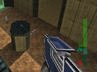
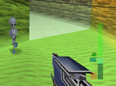
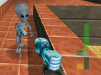
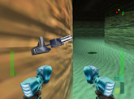
Le
Shield est dans le Double Couloir avec une Lumière Bleu Turquoise.
L'Occulteur est sur le petit promontoire en Carrelage Rouge dans La
Salle aux 2 Parterres de Gazon. Le mieux est de le choper sur les
Simulants Morts, car ils en ont souvent un ou il reste 15 Secondes
environ. Mais si vous passez à coté, n'hésitez pas. Remarque
générale sur la LapTop Gun : verifiez que vous avez pleins de
munitions avant de le placer. Vu que les Maians sont coriaces et souvent
blindés de Shields, c'est important !
Et pensez à l'emmener avec vous quand la Zone change d'Endroit
! Maintenant, que faire dans les Zones ? Pour la Zone ou l'on peut grimper sur le Petit Muret Blanc (à coté du mur fissuré) il est astucieux de se baisser pour éviter de se faire avoir de loin. On peut placer un LapTop dans La Salle, ou essayer de Tranquiliser les Simulants à mort, vu que cette Zone est la plus éloignée par rapport aux autres. Comme pour toutes les Zones, n'oubliez pas de récupérer votre LapTop Gun à la Fin. Pour la Zone dans La Salle aux 2 Parterres de Gazon, le LapTop Gun est très recommandé, vu l'Espace assez aéré de la pièce. Si un Simulant se coince dans un coin, finissez-le au Phoenix ! Il mourra dans un feu d'artifice de petites explosions. Et comme le Mur est proche, si vous le touchez pas, au moins il se prendra celles sur le Mur. Pour La Zone en escalier, c'est simple (enfin, tout est relatif). Il suffit de mettre un LapTop Gun en Sentinelle (comme à chaque fois) de façon à ce qu'il vise loin, dans un Angle par exemple. Si vous etes à plusieurs, c'est encore plus efficace puisque vous contrôlerez les 2 Entrées ! Des que le LapTop se met en marche, vous pouvez l'accompagner (si vous avez assez d'énergie) avec 2 Phoenix en visant le Petit Roswell. Pour La Cave, même technique que pour au-dessus. Voilà, j 'espère que vous y arriverez avec cette petite aide. N'oubliez pas que chaque Arme à son Utilité et que contrairement à ce qu'on croit au début, le Tranquilliseur est efficace car si il ne permet pas de tuer les Maians, il permet en revanche de les Droguer et ils sortiront tous seuls comme des Grands Garçons de la Zone ! Il est impératif d'avoir un LapTop Gun. N'essayez même pas le Falcon 2 ou çà va mal tourner pour vous. Ce Challenge est pour moi un des Meilleurs. Technique, Original, et y'a même des Roswells dans la Villa ! |
Challenge bien rapide et explosif autant que technique. Là vous allez comprendre ce que ressent un Lapin entourés de Chasseurs. En effet, vu le Niveau, et vu le Farsight XR-20, va y avoir de la trotte ! Si vous restez sur place, c'est fini. Les Simulants le manient TRES bien dans ce Challenge. Deux Solutions s'imposent. Comme d'habitude, soit vous voulez gagner, et juste gagner, soit vous voulez faire un Remake de Léon et jouer les Héros. Pour les Léon en herbe, chopez le Farsight XR-20 et mettez-le en Deuxième Fonction. Apres éclatez-vous, car là on est en Mode Mouvement Rapides. Si il vous arrive des Pépins, je décline toute responsabilité. Pour ceux qui veulent littéralement éclater le Challenge (qui n'est pas si dur que çà) le mieux est de trouver le Lance-Roquettes et de rester dans la Salle aux 2 Piliers la plus en bas. En regardant le Radar, vous pourrez exploser les Simulants juste avant qu'ils ne rentrent dans la Salle. Le Passage menant de cette Salle au Grand escalier en U (celui qui grimpe 2 Etages) est parfait pour ce genre de Travail. Notez qu'il y a un Shield en haut... Vous pouvez aussi viser à partir de l'autre entrée de cette Salle, en faisant attention à ne pas tomber si les Simulants vous tirent dessus. Je n'ai pas de technique particulière pour ce Challenge. Le tout est de tout le temps bouger pour éviter les Coups de Farsight XR-20. Les Roquettes sont efficaces car c'est beaucoup plus rapide qu'un Coup de Farsight XR-20, même si le Niveau est assez exigu. |
Ce Challenge est particulier puisqu'il vous met des Simulants dans votre camp. Et ce qui est dur c'est de faire avec, vu qu'il ne sont pas tres futés ! Tout d'abord je vous conseille de bien explorer le Niveau avant, tout seul, pour bien repérer les Endroits ou vous serez gagnant. Il y en a un qui est IMPARABLE, mais il faut réussir à y arriver : C'est le long couloir ROUGE qui finit en Cul-de-Sac. Il y a dans ce couloir un tout petit recoin. Si vous vous placez bien avec votre Simulant visant le même endroit que vous, les Simulants (Adverses) se feront avoir presque à chaque fois. Je dis bien « presque » car parfois ils se prennent pour un Léon ou un Terminator et débarquent en tuant tout le Monde très rapidement. C'est stressant surtout qu'on arrive même pas a tirez un seul coup qu'on est déjà Mort. Faites attention au Trou avec l'echelle car les Simulants visent super bien dedans et utilisent souvent ce passage. Attention également aux Longs Couloirs du Sous-sol, ou il est facile de se faire Shooter dans le dos. Evidemment, ce Challenge est aussi très dur vu que l'on est en License To Kill. Les Meilleurs Armes sont le Falcon 2, le Magsec 4 et peut-etre aussi le Mauler. Si vous les avez en plus en Double, c'est tout bon. Attention toutefois avec la Technique du Couloir Rouge car si vous y arrivez, il se peut que les Simulants Ennemis se jettent sur vos Alliés et vous oublient. Les Simulants aiment les Points Faciles. |
Ce Challenge est assez simple si des le Départ vous placez la situation à votre avantage. En fait, il faut réussir à choper un Callisto NTG, puis un Occulteur. Après çà, ruez-vous sur le Récepteur et foncez au PC, en vous rendant invisible juste quand vous commencez à Télécharger. Le Gros Problème de ce Challenge est justement cette Saloperie d'Occulteur. Pour le Challenge 18, il était placé assez loin de toute circulation, mais là c'est différent, donc les Simulants s'en servent comme des Gorets. Si vous ne voyez plus personne bouger sur le Radar, il va falloir vous affoler très vite car ça veut dire qu'une Saleté Télécharge dans un coin !! Rien à dire sur ce Challenge, à part qu'il faut juste éviter le Reaper ou à la limite le Shotgun, pour le temps qu'il met a recharger. Et squatter à mort l'Occulteur... |
Ce Challenge est bien vicieux ! En effet, associer Valise Verte et License To Kill est déjà fort, si en plus on a des Armes comme Le K7 Avenger… Lorsqu'on réapparaît, ce qu'on cherche en premier c'est une Arme ! Voici donc la Liste des Armes et leurs valeurs dans ce Challenge. K7 Avenger. C'est l'Arme par excellence, qui permet de tirer dans le tas en étant presque sur de faire un Carton dans 70% des Cas. Bonne cadence de Tir, bon Zoom, bon temps de Recharge. Que demande le Peuple ? Une Troisième Fonction Grenade Launcher ! A noter que cette Arme est située dans un endroit particulièrement exposé, et donc dangereux car ici les Simulants visent très bien. Il y a aussi le Falcon 2. Excellent Arme si elle est en Double. Aussi bien que le K7 Avenger il me semble, dans ce Challenge. Temps de rechargement génial, sauf que les Munitions partent vite. Mais bon, quand on aime on ne compte pas. Sniper Rifle. Attention car là vous risquez de vous faire plumer facilement. En effet, cette Arme est tout à fait inappropriée pour ce Challenge. Elle vise loin, d'accord, mais au corps à corps c'est autre chose… A utiliser si vous traînez dans les longs couloirs de la Base. Arbalète. Je vous sens stressé ? C'est normal, cette Arme, bien qu'originale, est un Désastre. Gros temps de rechargement, Cadence de Tir plus que Faible, que dire de plus ? |
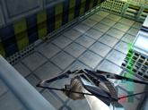
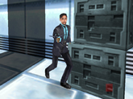
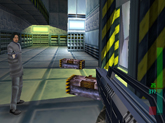
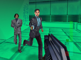
A
propos du Shield : Que vous en ayez un ou non, le Résultat sera le
même car les Simulants « savent » si vous en avez un. Ne
me demandez pas pourquoi mais c'est comme çà. Un Truc pour le vérifier
est de se faire tuer sans Shield. Vous avez remarqué ? Ils ne
tirent qu'une seule Balle ? Maintenant prenez un Shield. Tiens
donc, ils tirent plusieurs coups !! C'est comme leur Radar Actif.
Même si vous faites un Battle sans Radar, ils vous trouveront, et
ce sans déambuler pendant des heures. Ils iront droit sur vous. Un
autre moyen de le voir est de mettre un DarkSim avec vous. Faites
en sorte qu'il reste à coté de vous sans bouger et là Oh ! Miracle !
Il bouge tout seul ! En fait il suit l'Adversaire de loin en
le « loquant » comme dans Zelda 64. Maintenant, ou aller quand on a la Valise ? Et bien… Il existe une planque infaillible tout en bas du Plan du Niveau 1. Une fois que vous avez la Valise, allez dans ce Trou et campez. Faites venir vos amis (plus on est de fous plus on rit) et attendez. Tiens ? Mais ? Et oui les Simulants restent sur place et NE BOUGENT PLUS ! Je sais pas pourquoi çà fait çà mais si vous restez dans votre trou ils ne vont plus venir et rester bloqués. Une fois je suis allé voir (pendant qu'un Ami avait la Valise) et j'en ai vu un qui restait à courir sur place. Etrange… Enfin çà arrive pas tout le temps non plus ! Pour revenir à la Planque, il y a un Shield juste à coté dans l'escalier, pour avoir l'Esprit tranquille. |
Le Deuxième (et dernier) Challenge en Ralenti. Et oui va falloir se le farcir… Allez au Boulot là-dedans !! Vite !! Attrapez le Laptop Gun ou le RCP-120 le plus vite possible car les Simulants sont coriaces ! Ensuite méfiez-vous des Grenades car au Ralenti, on ne se rend plus très bien compte à quel moment çà explose, et bonjour les Mauvaises Surprises. Gaffe aussi au Temps que mettent les Flammes a disparaitre ! Le Magsec 4 est déconseillé, sauf si vous n'avez rien d'autre. En Double vous avez sûrement des Chances, mais si vous en avez 2 c'est que vous avez parcouru du Chemin, et si vous avez parcouru du Chemin, attrapez une Arme Automatique !! Le RCPouille est dans la Cave, quand au Laptop Gun, il est dans le Grand Perchoir (qui est en face du Petit Perchoir). Rien à dire sinon que le Camping marche au poil avec RCP-120 et Laptop en plus, en Sentinelle, juste au-dessus. |
Attention ce Challenge est un des plus durs de Tous !! Préparez-vous à manger du Feu pendant un bout de temps ! Allez on commence le Challenge. Le But de ce Challenge est de voler la Valise Adverse. Ce qu'il faut donc faire des le départ, c'est repérer ou est la Valise, et donc, la Zone des Simulants. Comme le Niveau est entièrement Symétrique, elle ne peut être que à Gauche, à Droite, ou droit devant vous des que vous sortez de votre Zone. Si elle est loin devant, dans la Zone en Face, c'est même pas la peine. Recommencez et attaquer si la Zone est à gauche ou à droite. Plus le chemin est court, mieux c'est. Ensuite viennent les Armes. Dans votre Zone, il y a des Devastator et des Super-Dragon. Je vous conseille le Super-Dragon mais vu que l'on utilisera surtout les Grenades, les 2 se valent. Pour tuer un Simulant facilement, utilisez la Bonne Vieille méthode Goldeneye, autrement dit visez les Pieds ! Ca explose tout de suite ! Oubliez le CMP 150, sauf si vous etes Masochiste. Le Tranquiliseur peut être utile mais attention : Les Gars en face utilisent des Grenades… Enfin, nous avons le Magnum Doré. Il se trouve sur les Petits Balcons placés au bord du Grand Trou Central. Cette Arme, même si elle peut faire sourrire par rapport à un Devastator ou un Super-Dragon, est en fait la MEILLEURE Arme de ce Challenge. Le Truc à faire est de faire 2 Balcons, ainsi vous aurez 2 Magnums et là… C'est la Fête ! Généralement les Simulants en ont sur eux, et souvent en Double. |
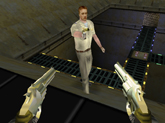

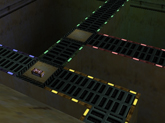
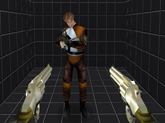
Bon
c'est pas tout ça mais comment voler leur Valise ? Pour
le Coup, les Simulants sont très intelligents. Ils envoient un des
leurs voler votre Valise tandis qu'un autre Campe littéralement sur
sa Valise. Que faire ? Nettoyer la Zone, et pour çà il existe
plusieurs méthodes. Par le Bas. C'est assez dur car déjà il faut slalomer entre les Grenades et les Coups de Magnum quand on court au bord du vide. Une fois entré, vérifiez qu'un Simulant ne vous suit pas. Fermez la Porte et si elle s'ouvre, tuez le Simulant en profitant de l'effet de surprise. Ensuite grimpez et lors du Dernier Dscalier, allez-y doucement, juste assez pour que le Simulant Campeur ne vous voie pas.Si vous avez un Devastator, envoyez quelques Grenades Collantes. Une fois la Zone nettoyée, dépêchez-vous de voler la Valise car les Simulants réapparaissent juste à coté ! Si vous avez d'autres Armes, shootez-les et avec un peu de chance, si ils ne meurent pas, ils se suicideront au moins avec leurs propres Explosifs. Par le Haut. C'est un peu plus dur mais plus rapide si bien appliqué. Il suffit de rentrer par un des 2 cotés avec les Ascenseurs puis de Joyeusement nettoyer la Zone à Grands Coups de Grenades. Le Magnum Doré convient également, si vous en avez 2. Attention car une fois descendu de l'Ascenseur, vous avez un Mur derrière vous et si une Grenade arrive, vous etes cuit ! Cette Méthode est rapide, mais vous etes trop exposés aux Tirs Ennemis donc faits votre choix parmi les 2 Méthodes. Dans les 2 cas vous devrez ressortir. Pour cela je vous conseille le Haut car si vous passez en bas, vous aurez TOUS les Simulants aux Fesses et là je vous assure qu'ils ne vous rateront pas. Au Niveau des Points, l'Equipe qui marque 3 fois a gagné. IL N'Y A PAS DE LIMITE DE TEMPS donc inutile de Camper ! Un bon truc si vous etes a 3 ou 4 est d'en envoyer 2 chercher la Valise pendant que 2 autres gardent la Zone en Haut et en Bas avec des Armes à Grenades. Comme ça même si ceux qui vont chercher la Valise meurent, au moins les Simulants n'entreront pas dans votre Zone. Un Dernier Point : Bonne Chance ! |
Challenge assez dur mais réalisable finalement. La Difficulté de ce Challenge vient du Fait que les Simulants utiliseront à outrance l'Occulteur et le Farsight XR-20, quand ce ne sont pas les Bombes-N… Pas de Conseils particuliers puisqu'il s'agit d'une Boucherie. Les Meilleurs Armes sont le K7 Avenger et le Mauler. Le Farsight XR-20 est trop Lent pour ce Challenge, et il ne repère pas les Simulants quand ils sont Occultés. |
Voilà un des Challenges les plus dur, dans la Lignée du 18 ou du 24. I y a dans ce Challenge 2 GROS PROBLEMES. Le Niveau « Ruines » est une merveille de dédales obscurs et Labyrinthique à souhait. Le Mode King Of The Hill dans un tel Niveau, c'est Chaud ! On peut aussi ajouter que les Armes sont disproportionnées, ce qui pose quelques graves problèmes lors de Confrontations. Par exemple, si un Simulant a un Laptop Gun et vous, un Falcon 2, vous devinez la suite ! Tout d'abord, il apparaît clair que le Laptop Gun est l'Arme la plus efficace, jusqu'ici rien de vraiment exceptionnel. L'Endroit le plus facile pour le trouver est la Partie « Rocheuse ». Vous le trouverait traînant au milieu de l'Endroit d'ou partent 4 voies. Un autre Endroit est dans la Partie « Sanctuaire ». Maintenant vous etes parés, enfin, le plus dur reste à faire. |
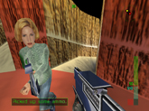

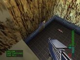
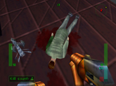
Les
Zones sont Nombreuses (6) et le meilleur moyen de les garder est d'appliquer
une méthode technique consistant a se servir de 2 Armes à la fois.
C'est la Méthode « 3 Mains » ou « 3 Armes en Même Temps ».
Vous avez le Laptop Gun et c'est bien. Maintenant la Deuxième Meilleure
Arme est sûrement les Mauler / Cyclone, car ils peuvent chacun être
en Double. Vu que les Simulants sont blindés d'Armes, vous aurez a
tous les coups soit des Doubles Cyclones, soit des Double Maulers.
Une fois les 2 Armes au choix en votre possession, il faut allez dans
la Zone et placer le Laptop Gun en Sentinelle dans un coin ou il pourra
toucher les Simulants de très loin, pour éviter les Attaques rapprochées.
Dans le Tournant d'une Allée par exemple. Ainsi vous pouvez garder L'AUTRE COTE de la Zone. Et oui, chaque Zone possède au moins 2 entrées, exceptée la Salle avec le Reaper dans un Trou du Mur. On peut aussi se mettre a coté de La Sentinelle, pour plus d'efficacité. N'oubliez pas le Shield qui se trouve dans le Couloir avec 3 Trous au Plafond. Ci-dessous, après les Images, voilà comment défendre les 6 Zones ! 1 - Pour la Zone dans la Partie « Sanctuaire » qui est un petit Carré dans un coin près du mur avec toutes les Fenêtres, baissez-vous car les Simulants se servent bien des ouvertures. Appliquez la Méthode « 3 Mains » et bonne chance, parce que c'est une des plus dures ! 2 - Pour la Zone de la Salle du Reaper (Jaune) placez le Laptop Gun sur le mur de Gauche quand vous sortez de la Salle. Les Simulants seront touchés de loin. Mettez vous le plus près de votre Sentinelle EN ETANT TOUJOURS DANS LA SALLE, et de façon à viser le fond du Couloir. Vous les aurez de loin. Pour le Trou dans le Plafond, faites gaffe. Observez bien votre Radar et agissez en conséquence Attendez-les à la descente ! 3 - Pour la Salle avec 2 Piliers Lumineux et un Chemin menant à la Zone Rocheuse, placez le Laptop Gun sur le Pilier le plus près de la Porte, pour que la Sentinelle cueille les Simulants dès qu'ils ouvrent la Porte. Si vous voyez sur le Radar qu'ils arrivent par la Zone Rocheuse, placez le de la même façon, mais pour que la Sentinelle les cueille dès leur descente dans le couloir Rocheux. 4 - Pour La Zone Rocheuse, il suffit de regarder le Radar et de cueillir les Simulants en Zoomant dès qu'ils sont visibles. On peut aussi placer une Sentinelle par sécurité et les attendre avec des Cyclones ou des Maulers ( en double, évidemment ). 5 - Pour La Zone avec les 3 Mini-Obélisques, appliquez la même méthode que pour la Salle aux 2 Piliers Lumineux. 6 - Enfin, pour la toute petite Zone juste à l'entrée de la Salle Hexagonale pleine de Neige (Partie « Sanctuaire ») il faut être bien attentif au Radar et placer une Sentinelle sur le Premier Pilier, ainsi les Simulants se feront ramoner, même si vous mourrez. Voilà. N'esperez pas pour autant gagner facilement. Les Simulants sont bien forts sur ce Challenge et il faut essayer et essayer encore et encore avant de bien rentrer dans le Rythme « Laptop Gun - Cyclone - Zone - Rebelote… ». Evitez autant que possible la Grande Salle Rectangulaire ainsi que les 2 Couloirs avec les 3 Trous dans le Sol sauf si c'est pour chercher un Shield. |
Cette fois-ci il y a des GROS PROBLEMES ! Problème 1 - Les Roquettes. Les Simulants savent bien s'en servir, et n'hésitent pas à se suicider. Un Truc à savoir est que justement, les Simulants paniquent facilement, et qu'il suffit de les approcher et de vite reculer pour qu'ils se suicident lamentablement. Alors à vous les Roquettes, reste à ne pas paniquer à votre tour. Problème 2 - Le Niveau. C'est une Merveille de dédales et d'allées sans issues. Si vous ne connaissez pas le Niveau PAR CŒUR, vous allez peiner pour trouver le PC, puis le Récepteur. Les Simulants connaissent bien évidemment le Niveau par cœur, et si vous n'etes pas à égalité avec eux sur ce point, attendez-vous à vous à manger du Plomb et des Roquettes souvent. Problème 3 - Le Récepteur. Il change tout le temps de place et est énervant à chercher, car il est Vert et certains couloirs du Niveau aussi ! De plus, si celui qui l'a meurt, le Récepteur réapparaît n'importe ou ! Une vraie misère car il faut cavaler et re-cavaler sans cesse… |
Problème
4 - En fait ce n'est pas VRAIMENT un Problème mais bon. C'est le PC.
Pour Télécharger il faut etre dans une Zone qui permette au Minimum
de le faire tranquillement. Et quand il est en plein milieu d'un Couloir
je vous raconte pas la Galère. La seule chose qui reste à faire est
de toujours recommencer une Partie jusqu'à ce que le PC soit tout
en Haut du Niveau, là ou il y a le Shield. Cette Zone est la plus
haute, donc la plus longue à atteindre pour les Simulants. Il y a juste 2 Entrées : une par un Escalier qui descend (de là ou vous etes, il descend), idéal pour shooter une Roquette dessus et prendre les Simulants de court. L'autre accès est un Ascenseur. Il faut donc alterner entre les 2 Entrées et vérifier que les Simulants sont bien loin pour commencer de Télécharger bien tranquille. Avec le Shield, vous ne devriez pas avoir trop de galères, sauf si les Simulants se suicident avec vous. |
Voilà un Challenge bien stressant, dans la Grande Tradition du Challenge 24, sauf que cette fois-ci vu les Armes on frôle le Délire. Vous aurez remarqué que la Meilleure Arme est tout simplement l'AR-34 ! Alors que font là tous ces Falcon 2 (pas assez Puissants !) Magnums (Lents !) et autres Shotguns (Lents et pas Précis !) je vous le demande ?! Un des Grands et Nombreux Mystères de Perfect Dark. Il n'existe qu'une Seule Technique valable, si vous voulez EN FINIR VITE !!! Cette Technique comporte 2 Variables : Votre Zone, et leur Zone. Voici les Raisons pour Lesquelles je vous implore de Recommencer. Recommencez à Zero si… Recommencez à Zero si votre Zone est dans la Grande Salle avec la Valise sur la Petite Colonne. Non mais vous vous voyez faire le Grand Tour et essayer de tomber PILE sur la Colonne (ou est votre Valise) avec 1 ou 2 Simulants aux Fesses ?! Et si en Plus votre Valise n'est plus là ? Non vraiment c'est du Masochisme. D'accord c'est le Jeu qui est comme çà mais personnellement je vous dis que vous allez vous énerver pour rien. Recommencez à Zero si la Zone des Simulants est dans La Fameuse Grande Salle avec la Petite Colonne. Recommencez à Zero si la Zone des Simulants est sur le Pont en bois Jaune, là ou est (et oui) l'AR-34 ! La Seule Manière de travailler convenablement est d'attendre que VOTRE Zone soit sur le Pont en bois Jaune. Vous aurez à chaque fois l'AR-34 et serez tout souriant. Sinon pas de conseils particuliers à part qu'il faut connaître le Niveau un Minimum pour prendre le Chemin le plus court. Utilisez à fond les pas Chassés pour marcher en Diagonale et Danser en Esquivant les Balles. |
Pour l'Avant Dernier Challenge, attendez-vous à vous prendre la plus grosse Raclée de TOUT LE JEU ! Vous pensez que j'exagère ? Vous allez voir… Tout d'abord les Simulants sont TRES rapides. Ensuite ils visent TRES bien. Et enfin ils sont TRES intelligents. Les Armes de ce Challenge : Le Dragon. C'est la Meilleure et on la trouve sur le Balcon intérieur au niveau le plus haut. Si vous avez déjà 2 Cyclones, vous pouvez le mettre en Mine De Proximité pour calmer un peu ces Saletés de Simulants…. Avant qu'ils ne reviennent ! On le trouve aussi au Début du Grand Escalier en U. Si vous avez 2 Cyclones, n'ayez pas peur de jeter votre Dragon, les Simulants en ont très souvent sur eux. Et hop ! Rebelote ! Une Paire de Cyclones ! Très Utiles, ils viennent juste après le Dragon. On les trouve au Niveau intermédiaire, et on peut ainsi facilement en avoir 2. Très bonne Arme, que les Simulants utilisent parfois en Deuxième Fonction. Ne faites pas pareil, cette Fonction est défoulant je vous l'accorde mais épuisante au Niveau Munitions. En fait le Cyclone pourrait se placer au même Niveau que le Dragon car on peut les avoir en Double. - Falcon 2 - Cmp 150 - Magnum. Vous voulez rire ?… Bon d'accord si vous n'avez rien d'autre c'est normal mais je vous conseille de vite passer aux Cyclones et au Dragon autant que possible. Le Falcon 2 n'est pas assez puissant. Le CMP 150 est faible, et je mets au Défi de placer la Deuxième Fonction en plein Combat. Enfin, le Magnum est trop lent, tout simplement. |

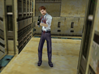
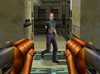
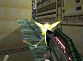
La
Technique qui marche le mieux est celle du Campeur. Pour cela, 2 Abris
existent : Le Cul-De-Sac sombre est l'Endroit
idéal pour jeter au loin un Dragon et attendre avec 2 Cyclones. Attention
toutefois à ce que les Simulants ne débarquent pas par le trou au-dessus
sinon vous allez vous faire picorer méchamment.
Il y a aussi le
Balcon avec de la Lumière Bleue. Placez-vous de manière à attendre
que les Simulants arrivent par le couloir. SURTOUT
ELOIGNEZ-VOUS du Balcon ! Vous allez vous faire avoir !
Attendez-les tranquillement ( si possible ) en biais dans le coin
du couloir pour les avoir de loin, surtout avec un Dragon. Vous avez
un Zoom, utilisez-le ! Enfin, quelques Conseils pour (bien) finir : - Soyez toujours en Mouvement (sauf si vous Campez évidemment !) - Evitez de trop rester sur les Ponts. N'essayer pas de Sniper !! - Attendre que les Simulants soient loin pour recharger, du moins ne rechargez pas inutilement. - Ne pas hésiter à leur foncer dessus dans un petite couloir si vous avez 2 Cyclones ! - Bonne Chance et SURTOUT du Sang-Froid ! |
Le Dernier Challenge va être dur car on vous a assigné un Simulant à vos cotés et c'est UN VRAI GLANDEUR ! (ou Glandeuse, puisque c'est Joanna). Première chose à faire IMPERATIVEMENT : Double Maulers ! Ils sont à 3 Endroits.Evidemment, utilisez-les en Deuxième Fonction !!! Voilà les Endroits : Grande Salle aux 4 Piliers / Balcon du Campeur / Salle Enneigée avec le Trou à Sens Unique. Une Fois que vous etes parés, ou même avant cela, faites en sorte que votre Simulant vous suive, ou vous protège, au choix. C'est une Tache longue car ce Simulant a tendance à fuir ou se faire toucher facilement. |
Ensuite,
les Zones !!! La
Zone du Balcon du Campeur. C'est une Zone assez simple à garder. Baissez-vous
pour éviter les Tirs des Simulants arrivant en bas et visez un peu
plus haut pour toucher la Tete. Normalement,
vous ne devriez pas avoir trop de problèmes avec cette Zone. |